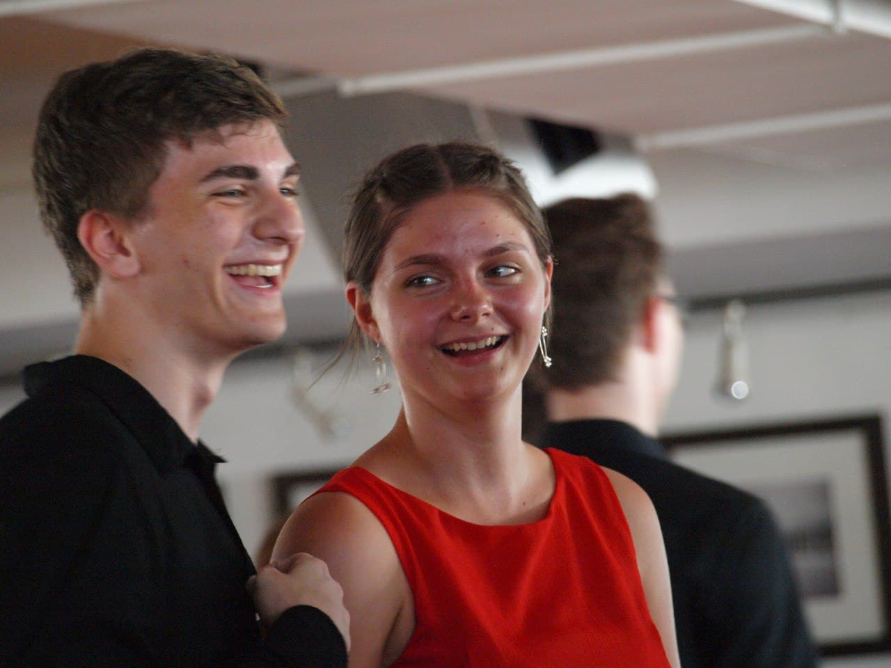

Mio
is a cute black and white housecat with big ears. He is currently old
and the most curious tom cat you can imagine. Although him being an
apartment cat, I take him on occasional walks in the park and I am
planning on cat proofing the balcony so he can enjoy the fresh air
whenever he wants.



Mio
is a cute black and white housecat with big ears. He is currently
? Years
old and the most curious tom cat you can imagine. Although him being
an apartment cat, I take him on occasional walks in the park and I am
planning on cat proofing the balcony so he can enjoy the fresh air
whenever he wants.

Skills
- Boop a finger
- Sit
- Give Paw
- Follow a finger
- Hunt feet
- Climb everything
- Play fetch


Story
My girlfriend's family found Mio abandoned on a parking spot - he was
starving and not older than 3 months. They took him in but weren't
able to keep him at their place and they didn't find someone else to
take him in. I have always wanted to have a cat ever since I was a kid
so my girlfriend and I decided to adopt him. Just a few weeks later he
sat in our apartment - the cutest, most playful and affectionate cat
in the whole world.
Favourite Spots
- On my gaming chair
- Behind my keyboard
- On his platform on the window
- On the catbed in the middle of our 2 desks
- In the middle of the couch
- In the laundry basket


Me
Hi, I am
? Years years old and graduated from the HTL
Salzburg in May 2021. I was born and raised in Salzburg and currently
have my own flat, although I am not planinng on staying here. Software
development, gaming and repairing mobile phones myself count to my
hobbies. After having tried out many different sports I stuck with
dancing where I met my dancing partner and girlfriend Elena.

Elena
My beautiful girlfriend Elena . She is currently
? Years
old and means the world to me.


Friends
is my favourite human with big ears. She is currently old and has the
most fierce lickety you can imagine.


Adventure
is my favourite human with big ears. She is currently old and has the
most fierce lickety you can imagine.


Military
is my favourite human with big ears. She is currently old and has the
most fierce lickety you can imagine.